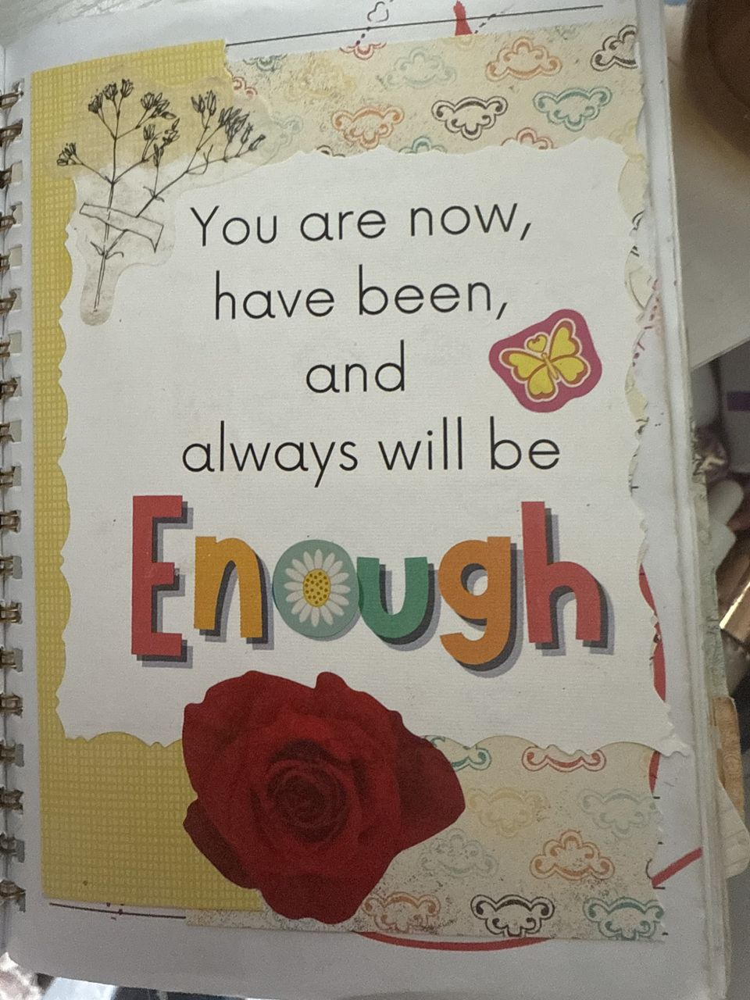

Frameworks / What Am I Carrying?
There's only one question underneath all the exhaustion, and it has two halves: what belongs to me, and what doesn't? Most high-capacity people have never been asked to sort it. So they carry all of it.
I don't have to hold everything together anymore. I have to place myself where my gifts do the most good, and let everything else find its own footing.Take the scorecard →
The Human Cost of Competence · Carrying vs. Caring · Women Who Became Infrastructure · Cultivating vs. Controlling
Ten honest questions. No email required.
Take the scorecard →Reflections from the work of building a life and a body of work without apology. No hype. No noise, something worth sitting with.
Free. Arrives when there's something real to say. Or read past letters →
Twenty questions scored across five domains, plus the Mine/Not-Mine sort, eight boundary scripts, and a one-week plan. The paid step up from the free scorecard. Instant PDF.
Naming what you carry is the first move. Setting it down for good is something we do together. The Unapologetic Leader is becoming a movement. People, not just women, learning, training, and backing each other so no one carries it solo. Permission is the door. The movement is the room.
Enough

From the journal
We use one privacy-friendly analytics cookie to learn what resonates. No ads, no selling your data. See our Privacy Policy.